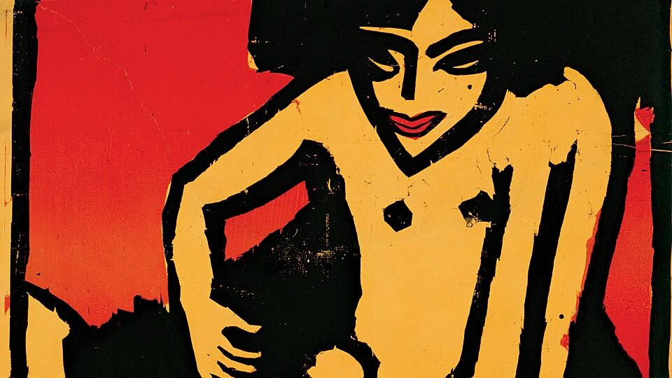

Centre Pompidou'dan 83 eser İzmir'de: Lumina sergisi açıldı

Görsel: Ernst Ludwig Kirchner - Poster for the exhibition for the artists' group "Die Brücke" at the Arnold Gallery Dresden - Go · Ernst Ludwig Kirchner · Public domain · Wikimedia Commons
Arkas Sanat ile Paris'teki Centre Pompidou arasındaki iş birliğinin ilk sergisi İzmir'de izleyiciye açıldı. "Lumina: Renk ve Işık Sanatı" başlıklı seçki, Fransız ulusal koleksiyonundan gelen 83 eseri bir araya getiriyor. Sergi, 20. yüzyıl başından 1970'lere uzanan bir dönemde rengin ve ışığın sanattaki yerini izliyor.
Lumina sergisinde ne oldu, hangi eserler geldi?
Sergi, Lucien Arkas Sanat Merkezi'nde açıldı. Merkez, Mistral İzmir yerleşkesinde bulunuyor. Euronews Türkçe'nin aktardığına göre toplam 2.500 metrekarelik alanın 1.110 metrekaresi sergi salonu olarak kullanılıyor.
Seçkide Georges Braque, Vassily Kandinsky, Fernand Léger, Frantisek Kupka ve Natalia Gonçarova gibi modern sanatın kurucu isimleri yer alıyor. Daha yakın dönemden Joan Mitchell, Etel Adnan, Shirley Jaffe, Kenneth Noland, Bridget Riley, Jesús Rafael Soto, Victor Vasarely ve Gerhard Richter'in işleri bulunuyor.
Euronews Türkçe'nin yayımladığı listede André Derain, Maurice de Vlaminck, Albert Marquet, Luigi Russolo, Stanton Macdonald-Wright, Berenice Abbott, Richard-Paul Lohse ve Agam da geçiyor. Böylece seçki yirmiyi aşan sanatçıya yayılıyor.
Küratörlüğü Anna Hiddleston ve Noémie Fillon yürütüyor. Seçki, Fovizm'den Op Art'a uzanan bir çizgide tablolardan ışık yerleştirmelerine ve kinetik heykellere kadar farklı üretim biçimlerini kapsıyor.
Centre Pompidou, merkezin adresini Mistral Çarşı içinde, Çınarlı'daki Ankara Asfaltı Caddesi üzerinde gösteriyor. Posta kodu 35170 olarak Konak ilçesine kayıtlı.
Arkas Sanat ve Centre Pompidou iş birliği neden bu kadar arandı?
Centre Pompidou koleksiyonu, modern sanatın en geniş arşivlerinden biri sayılıyor. Bu ölçekte bir seçkinin İstanbul yerine İzmir'de gösterilmesi, arama ilgisini artıran başlıca neden oldu.
İkinci neden iş birliğinin uzunluğu. Bloomberg HT, 2026-2031 arasını kapsayan beş yıllık anlaşmada yılda iki sergiyle toplam on serginin planlandığını yazıyor. Lumina bu dizinin ilk halkası.
Centre Pompidou kendi mekân sayfasında dizinin ikinci sergisini "Through Color" adıyla Nisan-Eylül 2027 aralığına koyuyor. Böylece İzmir için birkaç yıla yayılan bir sergi takvimi ortaya çıkıyor.
İş birliğinin başlangıç yılında da fark var. Bloomberg HT anlaşmayı 2026-2031 dönemine yerleştiriyor; Centre Pompidou ise beş yıllık ortaklığın 2024'te kurulduğunu belirtiyor. Sergi sayısı konusunda da iki kaynak aynı rakamı vermiyor.
Lumina sergisinde bilinenler ve henüz bilinmeyenler neler?
Kapanış tarihi net: 14 Şubat 2027. Açılış gününde ise kaynaklar ayrışıyor. Bloomberg HT, Euronews Türkçe ve Sabah sergiyi 27 Eylül 2026 başlangıçlı veriyor; Centre Pompidou ise kendi sayfasında 26 Eylül tarihini gösteriyor.
Bilet ücreti ya da girişin ücretsiz olup olmadığı haberlerde geçmiyor; bu ayrıntı henüz açıklanmadı. Centre Pompidou, merkezin salı ile cumartesi arasında 10.00-18.00 saatlerinde açık olduğunu ve bilgi ile rezervasyonun kendi ajandasından yürütüldüğünü belirtiyor.
Yan program duyuruldu, ayrıntısı paylaşılmadı. Indigo Dergisi'nin aktardığına göre eğitim atölyeleri, seminerler, konserler, tematik film gösterimleri ve rehberli turlar planlanıyor. Bu etkinliklerin tarihleri ve kontenjanları verilmedi.
Lumina sonrası Arkas Sanat'ta sırada ne var?
Serginin destekçisi olarak İş Bankası duyuruldu. Dizinin devamında hangi eserlerin geleceği ve seçkinin İzmir dışında başka durağı olup olmayacağı ise açıklanmadı.
Takip etmek için
- Lucien Arkas Sanat Merkezi, Mistral İzmir yerleşkesi, Konak: ziyaret salı-cumartesi 10.00-18.00 aralığında yapılıyor.
- centrepompidou.fr üzerindeki Arkas Sanat mekân sayfası: tarih, eser bilgisi ve rezervasyon ayrıntıları burada güncelleniyor.
- Dizinin ikinci sergisi "Through Color" için Nisan 2027 takvimini izleyin; kapsamı henüz duyurulmadı.
Sık sorulan sorular
Lumina sergisi ne zamana kadar açık?
Sergi 14 Şubat 2027'de kapanıyor. Başlangıç için Bloomberg HT, Euronews Türkçe ve Sabah 27 Eylül 2026 diyor; Centre Pompidou kendi sayfasında 26 Eylül tarihini veriyor.
Lumina sergisine giriş ücretli mi?
Bilet fiyatı ya da girişin ücretsiz olup olmadığı henüz açıklanmadı. Centre Pompidou, bilgi ve rezervasyonun kendi ajanda sayfasından yürütüldüğünü belirtiyor.
Arkas Sanat ve Centre Pompidou iş birliği kaç sergi sürecek?
Bloomberg HT'ye göre 2026-2031 arasındaki beş yıllık anlaşma yılda iki sergi, toplamda on sergi öngörüyor. Lumina bunların ilki.
Olgular şu yayıncıların haberlerinden derlendi: Bloomberg HT, Euronews Türkçe, Sabah, Centre Pompidou. Metnin tamamı TrendSaphiens tarafından yazıldı; kaynaklarla kelime örtüşmesi %0.0 (eşik %5). Kaynaklarda olmayan bilgi eklenmedi.